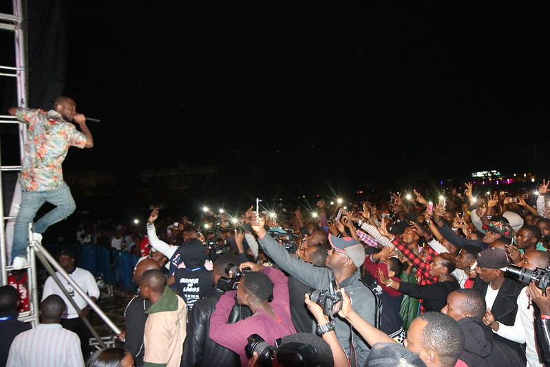

East African Music Festival
backgroud
East African Music Festival is all about people coming together and having an experience of a lifetime while listening to great music in a beautiful setting in the East of Africa. the aim is to strengthen the local community identity and spirit by providing a platform for international and local artists to showcase their talents to a broad and international audience.
